AWS SDK를 호출하는 코드의 통합 테스트를 계정과 자격 증명 없이 실행할 수 있는지 묻는 글입니다. AWS Emulator v1.0.322로 확인한 범위에서는 S3, DynamoDB, SQS를 사용하는 앱 코드의 통합 테스트가 개발 장비와 CI에서 앱 코드 수정 없이 실행됐습니다. 비교한 오류 응답 7건 중 6건은 실제 AWS와 같았습니다. 권한 검증, 복잡한 IaC 배포, 대량 데이터, LLM 출력에 의존하는 로직은 실제 AWS에 남깁니다.This post asks whether integration tests for code that calls the AWS SDK can run without an account or credentials. Within what was verified with AWS Emulator v1.0.322, integration tests for app code that uses S3, DynamoDB, and SQS ran on a development machine and in CI with no changes to the app code. Six of the seven error responses compared matched real AWS. Permission verification, complex IaC deployments, large volumes of data, and logic that depends on LLM output stay on real AWS.
AWS SDK를 호출하는 코드의 통합 테스트는 어디에서 실행하고 계신가요? 개발 계정에서 실행하면 리소스를 만들고 지우는 시간과 비용이 들고 CI 작업에 자격 증명도 넘겨야 합니다. SDK를 모의 객체(mock)로 바꾸면 빠르지만 조건부 쓰기 실패나 없는 객체 조회처럼 실제 서비스가 돌려주는 오류를 재현하기 어렵습니다.
2026년 11월 11일 공개된 AWS Emulator는 AWS API를 로컬 프로세스 하나로 흉내 내는 테스트 도구입니다. 이 글은 AWS Emulator의 동작 방식을 소개하고 설치와 연결 방법, 개발과 CI에서 활용하는 방법을 예제로 설명합니다.
01
AWS Emulator는 aws-emulator 명령 하나로 실행하는 프로그램입니다. 시작하면 127.0.0.1:9297에서 HTTPS로 모든 서비스의 API를 한 개의 엔드포인트(Endpoint)로 받습니다. 개발자는 환경 변수로 AWS CLI와 SDK의 엔드포인트만 에뮬레이터로 바꾸고 코드는 그대로 실행합니다. 에뮬레이터는 요청을 메모리 안의 리소스로 처리합니다. User Guide에 따르면 요청과 응답, 리소스 데이터를 AWS로 보내지 않습니다.
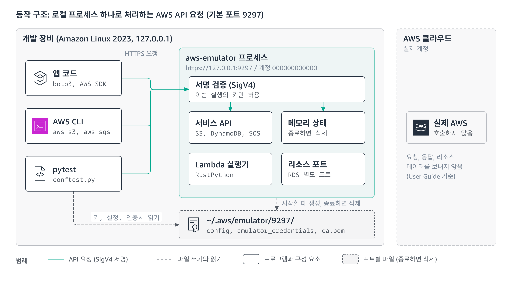
동작을 이해하는 데 필요한 특징은 네 가지입니다.
~/.aws/emulator/<포트>/ 폴더에 만듭니다. 기본 설정에서는 이 키로 SigV4 서명을 한 요청만 처리합니다.000000000000 하나처럼 동작합니다. 포트를 달리해 여러 개를 띄우면 서로의 리소스를 볼 수 없습니다.NotImplemented를 돌려주므로 해당 테스트가 바로 실패합니다.What’s New 발표문에 따르면 서비스는 AWS가 공개한 API 모델에서 생성하고 추가 서비스 요금은 없습니다. 소스 코드는 GitHub 저장소에 공개되어 있습니다. What is AWS Emulator? 문서는 빌드와 테스트 전용이므로 운영 워크로드에는 사용하지 말라고 밝힙니다.
Getting started 문서는 작업 방식과 실행 환경에 따라 네 가지 시작 경로를 안내합니다. 에뮬레이터는 Linux에서만 직접 실행되므로 macOS와 Windows는 컨테이너를 사용합니다.
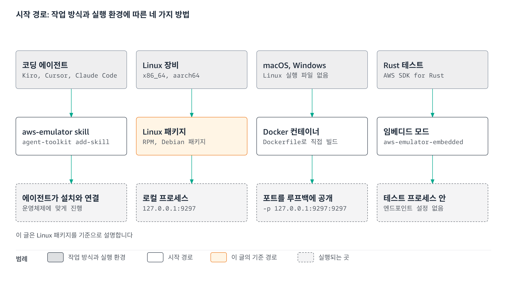
이 글은 Linux 패키지를 기준으로 설명합니다. 다른 경로도 에뮬레이터가 실행되는 위치만 다르고 연결 방법과 활용 방식은 같습니다. 임베디드 모드만 예외로 엔드포인트와 인증서를 설정하지 않고 테스트 코드가 에뮬레이터를 직접 호출합니다.
User Guide는 에뮬레이터가 AWS와 얼마나 같게 동작하는지를 충실도(fidelity)라고 부릅니다. AWS는 서비스별 충실도 테스트를 만들어 릴리스마다 통과 결과를 GitHub 릴리스 페이지에 scores.json.gz 파일로 공개합니다. v1.0.322에서는 서비스 355개의 테스트 중 56.5%를 통과했습니다.
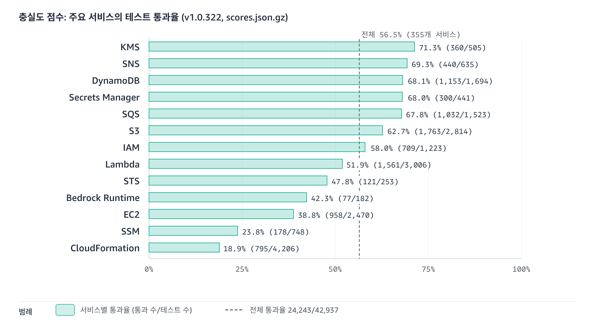
점수는 기능의 몇 퍼센트가 동작하는지를 뜻하지 않습니다. 충실도 테스트에는 오류 경로와 경계 조건이 많아서 일반적인 호출은 점수보다 잘 동작했습니다. 점수가 18.9%인 CloudFormation으로도 리소스 네 개짜리 단순한 템플릿은 배포됐습니다. Fidelity 문서에 따르면 리소스를 만들고 조회하는 컨트롤 플레인 API가 AWS와 가장 가깝습니다. 에뮬레이터는 하루에도 여러 번 업데이트되므로 프로젝트가 사용하는 서비스의 최신 점수를 확인하고 도입하는 것을 권고합니다.
02
Getting started on Linux 문서대로 패키지를 내려받아 서명을 확인한 뒤 설치합니다.
PACKAGE_FILE=aws-emulator-aarch64.rpm # x86_64 장비는 aws-emulator-x86_64.rpm
BASE=https://downloads.aws.com/aws-emulator/packages/aws-emulator/LTS/latest
curl -fsSLO $BASE/$PACKAGE_FILE
curl -fsSLO $BASE/$PACKAGE_FILE.sig
curl -fsSLo aws-publishing.asc https://downloads.aws.com/keys/gpg/current.asc
gpg --import aws-publishing.asc
gpg --fingerprint ssm-publishing@amazon.com # 98BC F336 A3BE 53B7 34E9 67C5 2E5B F49B D940 F624 인지 확인
gpg --verify $PACKAGE_FILE.sig $PACKAGE_FILE # Good signature 확인
sudo dnf install -y ./$PACKAGE_FILE
aws-emulator -v # Version: 1.0.322 (설치 시점의 최신 버전이 출력됩니다)Debian 계열은 .deb 패키지를 받아 apt-get install로 설치합니다.
macOS와 Windows에서는 Getting started with Docker 문서의 Dockerfile로 이미지를 직접 빌드해 실행합니다. AWS는 미리 빌드한 이미지를 배포하지 않습니다. 포트는 -p 127.0.0.1:9297:9297처럼 루프백 주소에만 공개하는 것을 권고합니다. -p 9297:9297로 공개하면 같은 네트워크의 다른 컴퓨터도 에뮬레이터에 접속할 수 있습니다.
코딩 에이전트를 사용한다면 AWS CLI 2.35.0 이상에서 Getting started with an AI coding agent 문서의 명령으로 skill을 설치합니다.
aws agent-toolkit add-skill --skill-name aws-emulator --region us-east-1설치한 뒤 에이전트에게 “AWS Emulator를 설치하고 내 프로젝트가 에뮬레이터를 사용하도록 설정해 줘”처럼 요청하면 에이전트가 운영체제에 맞게 설치하고 시작한 뒤 연결합니다.
터미널 하나에서 에뮬레이터를 실행합니다. 준비가 끝나면 message가 emulator server information인 JSON 한 줄이 출력됩니다. 이 시작 줄에는 엔드포인트와 설정 파일 경로가 들어 있고 Command reference 문서는 스크립트가 이 줄을 읽어도 된다고 안내합니다.
$ aws-emulator -t off
{"timestamp":"2026-11-12T01:12:13.952071Z","level":"INFO","fields":{"message":"emulator server information",
"endpoint_url":"https://127.0.0.1:9297","health_check_url":"https://127.0.0.1:9297/__admin/health",
"config_file":"/home/ec2-user/.aws/emulator/9297/config","ca_file":"/home/ec2-user/.aws/emulator/9297/ca.pem", ...}}자주 사용하는 시작 옵션은 표 1에 정리했습니다.
| 옵션 | 기본값 | 설명 |
|---|---|---|
-p, --port | 9297 | 0이면 운영체제가 빈 포트를 고릅니다. 실제 포트는 시작 줄에서 읽습니다 |
-b, --bind | 127.0.0.1 | 수신 주소. 기본값이면 같은 장비에서만 접근할 수 있습니다 |
-t, --telemetry | on | 익명 사용 데이터와 오류 데이터 전송. CI에서는 off로 끕니다 |
--idle-timeout | 없음 | 지정한 초 동안 호출이 없으면 스스로 종료합니다 |
표 1. 주요 시작 옵션(AWS Emulator command reference 기준)
다른 터미널에서 Pointing your AWS SDK at AWS Emulator 문서의 변수를 설정합니다. 이 글의 예제는 같은 내용을 examples/env.sh로 저장해 사용합니다.
# examples/env.sh
export AWS_ENDPOINT_URL=https://127.0.0.1:9297
export AWS_SHARED_CREDENTIALS_FILE=$HOME/.aws/emulator/9297/emulator_credentials
export AWS_CONFIG_FILE=$HOME/.aws/emulator/9297/config
export AWS_CA_BUNDLE=$HOME/.aws/emulator/9297/ca.pem
export AWS_EC2_METADATA_DISABLED=true
export AWS_DISABLE_HOST_PREFIX_INJECTION=true
export AWS_REGION=us-east-1
export AWS_DEFAULT_REGION=us-east-1
unset AWS_ACCESS_KEY_ID AWS_SECRET_ACCESS_KEY AWS_SESSION_TOKEN AWS_PROFILE| 변수 | 역할 |
|---|---|
AWS_ENDPOINT_URL | 모든 요청을 에뮬레이터로 보냅니다. localhost 대신 127.0.0.1을 사용해야 S3 버킷 이름이 경로에 들어갑니다 |
AWS_SHARED_CREDENTIALS_FILE, AWS_CONFIG_FILE | 이번 실행의 키와 설정 파일을 사용합니다 |
AWS_CA_BUNDLE | 에뮬레이터의 자체 서명 인증서를 신뢰합니다(AWS CLI, boto3 기준) |
AWS_EC2_METADATA_DISABLED | EC2에서 인스턴스 프로필의 실제 자격 증명을 가져오지 않습니다 |
AWS_REGION, AWS_DEFAULT_REGION | 리전을 하나로 고정합니다 |
unset 줄 | 셸에 남은 실제 자격 증명을 지웁니다 |
표 2. 주요 연결 설정 변수(Pointing your AWS SDK at AWS Emulator 문서 기준)
에뮬레이터의 설정 파일에도 엔드포인트가 들어 있어서 두 파일 변수만 지정해도 연결은 됩니다. 그래도 AWS_ENDPOINT_URL은 빼지 않는 것을 권고합니다. 에뮬레이터가 멈추면 설정 파일도 지워지기 때문입니다. EC2 개발 장비에서 두 파일 변수만 지정한 채 에뮬레이터를 멈추자, 읽기 전용 호출인 aws sts get-caller-identity가 인스턴스 프로필 자격 증명으로 실제 계정에 전달됐습니다. 변수 8개를 모두 지정하면 같은 호출이 실제 계정에 전달되지 않고 로컬에서 오류로 끝났습니다.
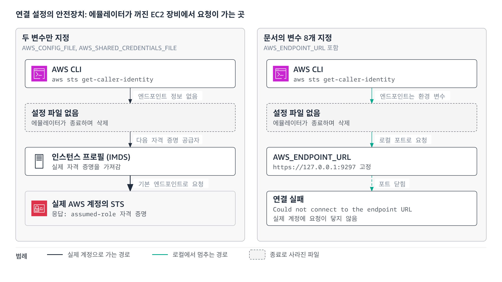
첫 예제는 AWS CLI만 사용합니다. 버킷에 파일을 올리고 DynamoDB 테이블에 항목을 넣은 뒤 다시 읽습니다.
#!/usr/bin/env bash
# examples/01-cli-quickstart.sh
set -euo pipefail
source "$(dirname "$0")/env.sh"
aws sts get-caller-identity # Account가 000000000000이면 에뮬레이터에 연결된 것
aws s3 mb s3://hello-emulator
echo "hello, emulator" > hello.txt
aws s3 cp hello.txt s3://hello-emulator/
aws dynamodb create-table --table-name notes \
--attribute-definitions AttributeName=id,AttributeType=S \
--key-schema AttributeName=id,KeyType=HASH --billing-mode PAY_PER_REQUEST
aws dynamodb wait table-exists --table-name notes
aws dynamodb put-item --table-name notes --item '{"id":{"S":"1"},"text":{"S":"first note"}}'
aws dynamodb get-item --table-name notes --key '{"id":{"S":"1"}}'{ "UserId": "AIDAH5I7GEMO7ADXNFAZU", "Account": "000000000000", "Arn": "arn:aws:iam::000000000000:user/emulator" }
...
{ "Item": { "text": { "S": "first note" }, "id": { "S": "1" } } }새 테이블은 실제 DynamoDB처럼 CREATING 상태로 시작하므로 wait table-exists로 기다립니다. User Guide 예제의 버킷 이름 amzn-s3-demo-bucket은 S3가 예약한 접두사라서 에뮬레이터도 거부했습니다. 가이드를 참조해서 테스트해 보실 때는 다른 이름으로 변경합니다.
03
가장 기본적인 활용은 기존 앱 코드를 고치지 않고 통합 테스트하는 것입니다. 다음 fixture는 테스트 세션이 시작될 때 에뮬레이터를 띄우고 끝날 때 내립니다. 터미널에 에뮬레이터를 따로 띄울 필요가 없습니다.
# examples/02-pytest/conftest.py (요약)
@pytest.fixture(scope="session")
def emulator(tmp_path_factory):
log = tmp_path_factory.mktemp("emulator") / "emulator.log"
# -p 0 lets the OS pick a free port, so parallel test runs never collide.
proc = subprocess.Popen(["aws-emulator", "-p", "0", "-t", "off"],
stdout=log.open("w"), stderr=subprocess.STDOUT)
info = wait_for_server_info(log) # reads the "emulator server information" line
os.environ.update(
AWS_ENDPOINT_URL=info["endpoint_url"],
AWS_CONFIG_FILE=info["config_file"],
AWS_CA_BUNDLE=info["ca_file"],
# ... 나머지는 examples/env.sh와 같은 변수 ...
)
# Guard: stop here if the calls would reach a real account.
assert boto3.client("sts").get_caller_identity()["Account"] == "000000000000"
yield info["endpoint_url"]
proc.terminate() # state lives in memory only, so nothing is left to clean up
proc.wait()fixture에는 세 가지 장치가 있습니다. -p 0은 운영체제가 빈 포트를 고르게 해서 여러 테스트 세션이 동시에 실행돼도 포트가 겹치지 않게 합니다. 시작 줄에서 실제 포트와 파일 경로를 읽어 연결 변수를 설정합니다. 계정이 000000000000인지 확인하는 가드는 설정이 잘못됐을 때 테스트가 실제 계정에 요청을 보내기 전에 멈추게 합니다.
S3에 메모를, DynamoDB에 메타데이터를 저장하는 앱의 테스트 3건은 에뮬레이터 기동부터 종료까지 포함해 3.27초에 끝났습니다. 두 세션을 동시에 실행해도 각자 다른 포트의 에뮬레이터를 사용해 둘 다 통과했습니다. 상태가 세션마다 따로이므로 버킷과 테이블 이름을 고정해도 되고 테스트 뒤에 리소스를 지우는 코드도 필요 없습니다. DynamoDB, S3, SQS를 함께 사용하는 주문 처리 앱의 테스트 4건도 앱 코드를 고치지 않고 통과했습니다.
CI 작업에 실제 AWS 자격 증명을 넘기지 않아도 되므로 포크에서 온 풀 리퀘스트에서도 통합 테스트를 실행할 수 있습니다. fixture를 사용하지 않는 작업이라면 셸 스크립트로 같은 패턴을 만듭니다.
# Start a private emulator; it stops by itself if the job forgets it.
aws-emulator -p 0 -t off --idle-timeout 600 >"$LOG" 2>&1 &
EMU_PID=$!
trap 'kill -TERM "$EMU_PID" 2>/dev/null || true' EXIT
# ... 시작 줄에서 포트를 읽어 PORT에 저장 ...
if [ -z "$PORT" ]; then echo "emulator did not start" >&2; exit 1; fi
source scripts/emu-env.sh "$PORT" # examples/env.sh와 같은 변수를 이 포트로 설정
test "$(aws sts get-caller-identity --query Account --output text)" = "000000000000"
python3 -m pytest -q tests/같은 장비에서 이 작업 두 개를 동시에 실행하니 각각 다른 포트를 받아 테스트 4건씩 통과했고 남은 에뮬레이터 프로세스는 없었습니다. PORT가 비었는지 확인하는 줄은 꼭 넣는 것을 권고합니다. 이 줄이 없을 때 에뮬레이터가 시작에 실패하자 기본 포트 9297로 넘어가 이미 떠 있던 다른 에뮬레이터에 테스트가 붙었습니다.
모의 객체로 재현하기 번거로운 오류도 실제 코드로 테스트합니다. 같은 AWS CLI 호출을 에뮬레이터와 실제 AWS(us-east-1)에 보내 오류를 비교했습니다. 실제 계정에는 입력 검증에서 거부되는 요청과 없는 리소스 조회만 보냈습니다.
| 호출 | 결과 | 오류 코드 |
|---|---|---|
DynamoDB CreateTable(테이블 이름 ab) | 일치 | ValidationException |
DynamoDB DescribeTable(없는 테이블) | 일치 | ResourceNotFoundException |
SQS GetQueueUrl(없는 큐) | 일치 | AWS.SimpleQueueService.NonExistentQueue |
SSM GetParameter(없는 파라미터) | 일치 | ParameterNotFound |
Secrets Manager GetSecretValue(없는 보안 암호) | 일치 | ResourceNotFoundException |
IAM GetRole(없는 역할) | 일치 | NoSuchEntity |
S3 CreateBucket(amzn-s3-demo-bucket) | 불일치 | 에뮬레이터 InvalidBucketName, 실제 AWS AccessDenied |
표 3. 에뮬레이터와 실제 AWS(us-east-1)의 오류 응답 비교
일치한 6건은 오류 코드와 메시지가 글자 단위로 같았습니다. DynamoDB 조건부 쓰기 실패(ConditionalCheckFailedException)와 S3의 없는 객체 조회(NoSuchKey)도 앞의 pytest 예제에서 그대로 재현됐습니다. 리소스의 상태 전이도 실제와 비슷하게 동작합니다. 새 DynamoDB 테이블은 3.46초 뒤 ACTIVE가 됐고 그 사이 PutItem은 ResourceNotFoundException을 받았습니다. 테스트에 waiter를 사용해 두면 같은 코드를 나중에 실제 AWS 스테이징에서도 실행할 수 있습니다.
에뮬레이터는 Lambda 함수 코드를 실제로 실행하고 함수 안의 AWS 호출을 실행 역할 자격 증명으로 서명합니다. 다음 함수는 이벤트로 받은 버킷에 객체를 저장합니다.
# examples/03-lambda-iam/handler.py
import boto3
def handler(event, context):
# Signed with the function's execution role, so the role's IAM policy applies.
boto3.client("s3").put_object(Bucket=event["bucket"], Key="from-lambda.txt",
Body=b"written by lambda")
return {"ok": True}함수를 aws lambda create-function으로 만들고 실행 역할에 정책이 없을 때와 s3:PutObject 허용 정책을 붙인 뒤 각각 aws lambda invoke로 호출했습니다.
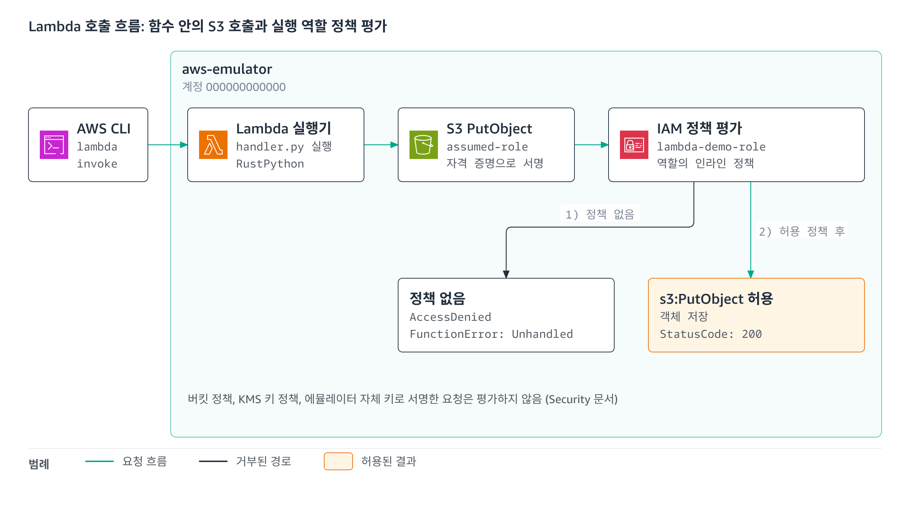
# 1) 정책 없음
"errorMessage": "... User: arn:aws:sts::000000000000:assumed-role/lambda-demo-role/lambda-demo
is not authorized to perform: s3:PutObject ... because no identity-based policy allows the s3:PutObject action"
# 2) 허용 정책 추가 후
{"ok": true}
$ aws s3 cp s3://lambda-demo/from-lambda.txt -
written by lambda예제 전체는 5.08초에 끝났습니다. 배포 없이 함수의 서비스 호출 흐름과 오류 처리를 확인할 수 있습니다. 함수는 실제 Lambda 런타임이 아니라 에뮬레이터에 내장된 RustPython으로 실행되므로 C 확장을 사용하는 패키지는 동작하지 않을 수 있습니다. Security 문서에 따르면 IAM 정책도 AWS와 같은 방식으로 평가하지 않습니다. 이 결과는 권한 설계가 안전하다는 근거가 되지 않으므로 권한 검증은 실제 AWS에서 해야 합니다.
코딩 에이전트는 코드를 고칠 때마다 테스트를 다시 실행합니다. 에뮬레이터를 사용하면 에이전트에게 실제 계정의 자격 증명을 주지 않고도 AWS를 호출하는 코드를 반복해서 실행하게 할 수 있습니다. 실행마다 키와 상태가 따로이므로 여러 에이전트가 동시에 작업해도 서로의 리소스를 건드리지 않습니다.
도입 전에 프로젝트가 에뮬레이터에서 동작할지 점검하는 데도 skill을 활용합니다. Checking whether your project works 문서에 따르면 에이전트에게 “이 저장소의 앱이 AWS Emulator에서 동작할지 확인해 줘”처럼 요청하면 됩니다. 에이전트는 프로젝트가 사용하는 AWS 작업을 찾아 충실도 테스트와 점수에 대조하고 믿고 사용할 수 있는 부분을 알려 줍니다.
04
| 적합한 용도 | 맞지 않는 용도 |
|---|---|
| S3, DynamoDB, SQS 같은 서비스를 사용하는 앱의 통합 테스트 | IAM 정책, 버킷 정책, KMS 키 정책 같은 보안 검증 |
| 조건부 쓰기 실패, 없는 리소스 조회 같은 오류 경로 테스트 | 복잡한 CloudFormation, AWS CDK, Terraform 배포 검증 |
| 자격 증명 없이 실행하는 CI 작업 | 성능 테스트, 부하 테스트, 장시간 실행 |
| 코딩 에이전트의 빠른 시행착오 반복 | 버킷당 1,000개가 넘는 객체를 다루는 데이터 처리 |
| Lambda 함수와 서비스 간 호출 흐름의 초기 검증 | LLM 출력에 의존하는 로직 |
표 4. 실습 결과로 정리한 AWS Emulator의 적합한 용도와 맞지 않는 용도(v1.0.322 기준)
맞지 않는 용도 중 일부는 실습에서 확인한 제약입니다. 버킷 하나에 객체를 계속 넣자 1,001번째 PutObject가 거부됐습니다. 이 한도는 문서에 적혀 있지 않습니다. Terraform으로 S3 버킷을 만들 때는 provider가 호출하는 S3 Control 요청이 에뮬레이터에 닿지 않아 실패했습니다. Amazon Bedrock Converse는 모델을 실행하지 않고 고정 문구를 돌려줬습니다.
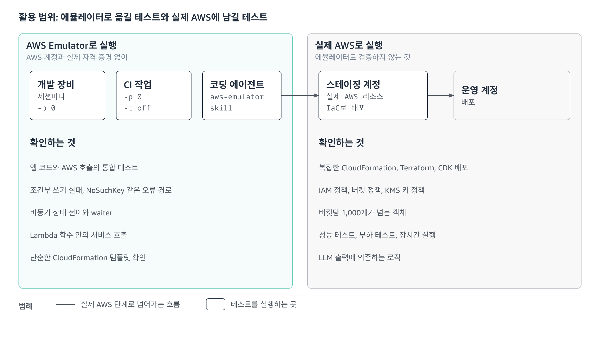
테스트 피라미드의 아래쪽인 앱 코드와 AWS 호출의 통합 테스트는 에뮬레이터로 옮기고 배포 검증과 보안 검증은 실제 AWS 스테이징에 남기는 구성을 권고합니다. 도입할 때는 다음 네 가지를 팀 규칙으로 정해 두면 안전합니다.
unset 줄을 함께 설정하고 테스트 환경에는 실제 자격 증명을 두지 않습니다.000000000000인지 확인하면 설정이 빠졌을 때 실제 계정에 요청이 가지 않습니다.05
글머리에서 AWS SDK를 호출하는 코드의 통합 테스트를 어디에서 실행하는지 물었습니다. AWS Emulator v1.0.322로 확인한 범위에서는 S3, DynamoDB, SQS를 사용하는 앱 코드의 통합 테스트를 계정과 자격 증명 없이 개발 장비와 CI에서 실행할 수 있었습니다. 설치는 패키지 하나로 끝났고 앱 코드는 고치지 않고 환경 변수만 바꿨습니다. 오류 응답은 비교한 7건 중 6건이 실제 AWS와 같았습니다.
필자는 AWS Emulator가 모의 객체와 개발 계정 사이에 비어 있던 테스트 계층을 채운다고 판단했습니다. 모의 객체는 빠르지만 개발자가 예상한 응답만 돌려줍니다. 개발 계정은 정확하지만 느리고 자격 증명 관리가 따라옵니다. 에뮬레이터는 실제 서비스의 오류와 상태 전이를 로컬에서 밀리초 단위로 돌려주므로 “AWS를 호출하는 코드가 맞게 동작하는가”를 커밋할 때마다 확인할 수 있게 합니다.
지원 범위는 빠르게 넓어질 것으로 예상합니다. AWS는 서비스를 공개된 API 모델에서 생성하고 충실도 테스트와 서비스별 점수를 릴리스마다 공개합니다. 2026년 11월 7일부터 11일까지 닷새 동안 나온 릴리스도 12개였습니다. 지금은 맞지 않는 용도로 분류한 IaC 배포 검증도 점수가 오르는지 지켜보며 다시 판단할 대상입니다. 반대로 IAM 정책 평가처럼 문서가 테스트하지 말라고 명시한 영역은 앞으로도 실제 AWS에 남겨 두는 편이 안전합니다.
활용도가 가장 크게 늘어날 곳은 코딩 에이전트라고 봅니다. 에이전트에게 실제 계정의 자격 증명을 주지 않고도 AWS를 호출하는 코드를 끝까지 실행해 보게 할 수 있습니다. 실행마다 키와 상태가 분리되므로 여러 에이전트를 동시에 실행해도 서로의 리소스를 건드리지 않습니다. 에이전트가 만든 코드를 사람이 검토하기 전에 에뮬레이터 테스트를 먼저 통과하게 하는 구성은 바로 적용할 수 있는 활용 방안입니다.
도입은 작은 범위에서 시작하는 것을 권고합니다. 먼저 자격 증명을 넘기기 어려웠던 포크 PR의 CI 작업과 모의 객체로 흉내 내던 오류 경로 테스트를 에뮬레이터로 옮깁니다. 같은 테스트를 스테이징 계정의 실제 AWS에서도 주기적으로 실행합니다. 에뮬레이터에서는 통과했지만 실제 AWS에서는 실패한 테스트가 있으면 어떤 호출에서 어떻게 달랐는지 기록합니다. 이 기록은 에뮬레이터를 어디까지 믿을지 정하는 팀의 기준이 됩니다. Fidelity 문서의 안내대로 차이를 GitHub 이슈로 알리면 에뮬레이터 개선에도 쓰입니다. 권한, 복잡한 IaC 배포, 대량 데이터, LLM 출력에 의존하는 로직은 당분간 실제 AWS에서 확인합니다. 이 글의 예제가 여러분의 테스트 환경을 검토하는 데 참고가 되기를 바랍니다.
Where do you run the integration tests for code that calls the AWS SDK? Running them in a development account costs the time and money of creating and deleting resources, and the CI job needs credentials. Replacing the SDK with mocks is fast, but it is hard to reproduce the errors a real service returns, such as a failed conditional write or a lookup of an object that does not exist.
AWS Emulator, released on November 11, 2026, is a testing tool that emulates AWS APIs in a single local process. This post introduces how AWS Emulator works and walks through installation, connection settings, and ways to use it in development and CI, with examples.
01
AWS Emulator is a program you run with one command, aws-emulator. Once started, it accepts the APIs of every service over HTTPS on a single endpoint at 127.0.0.1:9297. Developers point the AWS CLI and the SDK at the emulator with environment variables and run their code unchanged. The emulator handles requests against resources held in memory. According to the User Guide, it does not send requests, responses, or resource data to AWS.
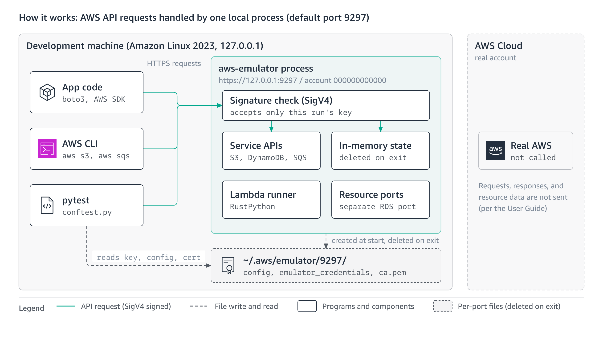
Four characteristics explain how it behaves.
~/.aws/emulator/<port>/ folder. With the default settings, it handles only requests signed with SigV4 using this key.000000000000. If you start several on different ports, they cannot see each other's resources.NotImplemented, so the test that calls them fails right away.According to the What's New announcement, the services are generated from the API models that AWS publishes, and there is no additional service charge. The source code is available in the GitHub repository. The What is AWS Emulator? page states that it is for building and testing only and should not be used for production workloads.
The Getting started page describes four start paths, depending on how you work and where you run. The emulator runs natively only on Linux, so macOS and Windows use a container.
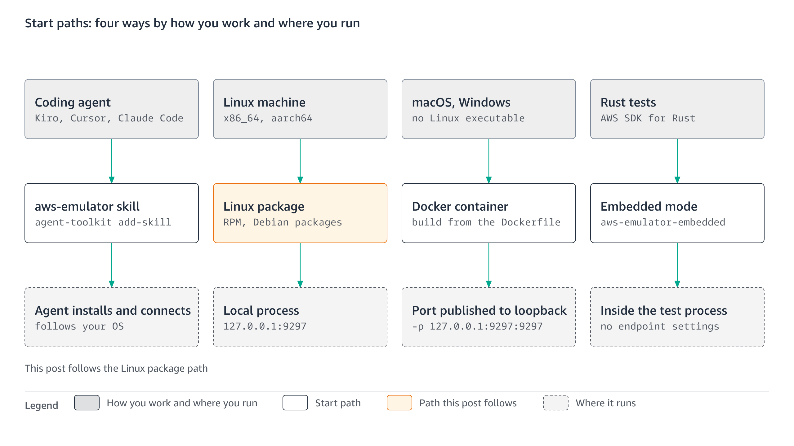
This post follows the Linux package. The other paths differ only in where the emulator runs, and the connection settings and usage are the same. Embedded mode is the one exception: the test code calls the emulator directly, without endpoint or certificate settings.
The User Guide calls how closely the emulator behaves like AWS its fidelity. AWS writes fidelity tests for each service and publishes the pass results for every release on the GitHub releases page as a scores.json.gz file. In v1.0.322, the emulator passed 56.5% of the tests for 355 services.
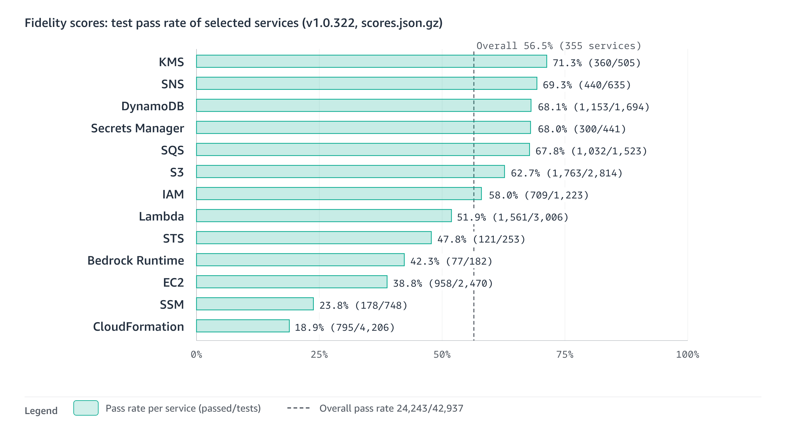
A score does not mean the percentage of features that work. The fidelity tests include many error paths and boundary conditions, so ordinary calls worked better than the scores suggest. Even with CloudFormation, which scores 18.9%, a simple template with four resources deployed. According to the Fidelity page, the control plane APIs that create and describe resources are the closest to AWS. The emulator is updated several times a day, so I recommend checking the latest scores of the services your project uses before you adopt it.
02
Download the package, verify its signature, and install it as described on the Getting started on Linux page.
PACKAGE_FILE=aws-emulator-aarch64.rpm # on x86_64, use aws-emulator-x86_64.rpm
BASE=https://downloads.aws.com/aws-emulator/packages/aws-emulator/LTS/latest
curl -fsSLO $BASE/$PACKAGE_FILE
curl -fsSLO $BASE/$PACKAGE_FILE.sig
curl -fsSLo aws-publishing.asc https://downloads.aws.com/keys/gpg/current.asc
gpg --import aws-publishing.asc
gpg --fingerprint ssm-publishing@amazon.com # check that it is 98BC F336 A3BE 53B7 34E9 67C5 2E5B F49B D940 F624
gpg --verify $PACKAGE_FILE.sig $PACKAGE_FILE # look for Good signature
sudo dnf install -y ./$PACKAGE_FILE
aws-emulator -v # Version: 1.0.322 (prints the latest version at install time)On Debian-based distributions, download the .deb package and install it with apt-get install.
On macOS and Windows, build the image yourself from the Dockerfile on the Getting started with Docker page and run it. AWS does not distribute a prebuilt image. I recommend publishing the port only on the loopback address, as in -p 127.0.0.1:9297:9297. If you publish it with -p 9297:9297, other computers on the same network can also connect to the emulator.
If you use a coding agent, install the skill on AWS CLI 2.35.0 or later with the command from the Getting started with an AI coding agent page.
aws agent-toolkit add-skill --skill-name aws-emulator --region us-east-1After installing it, ask the agent something like "Install AWS Emulator and set up my project to use the emulator," and the agent installs, starts, and connects the emulator for your operating system.
Run the emulator in one terminal. When it is ready, it prints one line of JSON whose message is emulator server information. This startup line contains the endpoint and the config file paths, and the Command reference page says that scripts may read this line.
$ aws-emulator -t off
{"timestamp":"2026-11-12T01:12:13.952071Z","level":"INFO","fields":{"message":"emulator server information",
"endpoint_url":"https://127.0.0.1:9297","health_check_url":"https://127.0.0.1:9297/__admin/health",
"config_file":"/home/ec2-user/.aws/emulator/9297/config","ca_file":"/home/ec2-user/.aws/emulator/9297/ca.pem", ...}}Table 1 lists the startup options you will use most often.
| Option | Default | Description |
|---|---|---|
-p, --port | 9297 | With 0, the operating system picks a free port. Read the actual port from the startup line |
-b, --bind | 127.0.0.1 | Listen address. With the default, the emulator is reachable only from the same machine |
-t, --telemetry | on | Sends anonymous usage data and error data. Set it to off in CI |
--idle-timeout | None | Exits by itself when there are no calls for the given number of seconds |
Table 1. Main startup options (from the AWS Emulator command reference)
In another terminal, set the variables from the Pointing your AWS SDK at AWS Emulator page. The examples in this post save the same content as examples/env.sh.
# examples/env.sh
export AWS_ENDPOINT_URL=https://127.0.0.1:9297
export AWS_SHARED_CREDENTIALS_FILE=$HOME/.aws/emulator/9297/emulator_credentials
export AWS_CONFIG_FILE=$HOME/.aws/emulator/9297/config
export AWS_CA_BUNDLE=$HOME/.aws/emulator/9297/ca.pem
export AWS_EC2_METADATA_DISABLED=true
export AWS_DISABLE_HOST_PREFIX_INJECTION=true
export AWS_REGION=us-east-1
export AWS_DEFAULT_REGION=us-east-1
unset AWS_ACCESS_KEY_ID AWS_SECRET_ACCESS_KEY AWS_SESSION_TOKEN AWS_PROFILE| Variable | Role |
|---|---|
AWS_ENDPOINT_URL | Sends every request to the emulator. Use 127.0.0.1 instead of localhost so that the S3 bucket name goes in the path |
AWS_SHARED_CREDENTIALS_FILE, AWS_CONFIG_FILE | Use the key and the config file of this run |
AWS_CA_BUNDLE | Trusts the emulator's self-signed certificate (for the AWS CLI and boto3) |
AWS_EC2_METADATA_DISABLED | On EC2, keeps the SDK from fetching the real credentials of the instance profile |
AWS_REGION, AWS_DEFAULT_REGION | Pin the Region to one |
The unset line | Clears real credentials left in the shell |
Table 2. Main connection variables (from the Pointing your AWS SDK at AWS Emulator page)
The emulator's config file also contains the endpoint, so the connection works with only the two file variables set. Even so, I recommend keeping AWS_ENDPOINT_URL. The config file is deleted when the emulator stops. On an EC2 development machine with only the two file variables set, when I stopped the emulator, the read-only call aws sts get-caller-identity went to the real account with the instance profile credentials. With all eight variables set, the same call did not reach the real account and ended with an error locally.
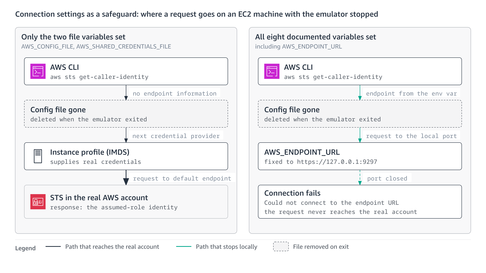
The first example uses only the AWS CLI. It uploads a file to a bucket, puts an item into a DynamoDB table, and reads it back.
#!/usr/bin/env bash
# examples/01-cli-quickstart.sh
set -euo pipefail
source "$(dirname "$0")/env.sh"
aws sts get-caller-identity # Account 000000000000 means you are connected to the emulator
aws s3 mb s3://hello-emulator
echo "hello, emulator" > hello.txt
aws s3 cp hello.txt s3://hello-emulator/
aws dynamodb create-table --table-name notes \
--attribute-definitions AttributeName=id,AttributeType=S \
--key-schema AttributeName=id,KeyType=HASH --billing-mode PAY_PER_REQUEST
aws dynamodb wait table-exists --table-name notes
aws dynamodb put-item --table-name notes --item '{"id":{"S":"1"},"text":{"S":"first note"}}'
aws dynamodb get-item --table-name notes --key '{"id":{"S":"1"}}'{ "UserId": "AIDAH5I7GEMO7ADXNFAZU", "Account": "000000000000", "Arn": "arn:aws:iam::000000000000:user/emulator" }
...
{ "Item": { "text": { "S": "first note" }, "id": { "S": "1" } } }A new table starts in the CREATING state, as in real DynamoDB, so the script waits with wait table-exists. The bucket name in the User Guide example, amzn-s3-demo-bucket, is a prefix reserved by S3, so the emulator rejected it too. When you follow the guide to test, change it to a different name.
03
The most basic use is running integration tests without changing the existing app code. The following fixture starts the emulator when the test session begins and stops it when the session ends. You do not need to start the emulator in a separate terminal.
# examples/02-pytest/conftest.py (abridged)
@pytest.fixture(scope="session")
def emulator(tmp_path_factory):
log = tmp_path_factory.mktemp("emulator") / "emulator.log"
# -p 0 lets the OS pick a free port, so parallel test runs never collide.
proc = subprocess.Popen(["aws-emulator", "-p", "0", "-t", "off"],
stdout=log.open("w"), stderr=subprocess.STDOUT)
info = wait_for_server_info(log) # reads the "emulator server information" line
os.environ.update(
AWS_ENDPOINT_URL=info["endpoint_url"],
AWS_CONFIG_FILE=info["config_file"],
AWS_CA_BUNDLE=info["ca_file"],
# ... the rest are the same variables as examples/env.sh ...
)
# Guard: stop here if the calls would reach a real account.
assert boto3.client("sts").get_caller_identity()["Account"] == "000000000000"
yield info["endpoint_url"]
proc.terminate() # state lives in memory only, so nothing is left to clean up
proc.wait()The fixture has three mechanisms. -p 0 lets the operating system pick a free port, so ports do not collide even when several test sessions run at the same time. The fixture reads the actual port and the file paths from the startup line and sets the connection variables. The guard that checks that the account is 000000000000 stops the tests before they send a request to a real account when the settings are wrong.
Three tests for an app that stores notes in S3 and metadata in DynamoDB finished in 3.27 seconds, including starting and stopping the emulator. When I ran two sessions at the same time, each used an emulator on a different port and both passed. Because state is separate for each session, you can use fixed bucket and table names, and you need no code to delete resources after the tests. Four tests for an order processing app that uses DynamoDB, S3, and SQS together also passed without changes to the app code.
You do not have to pass real AWS credentials to the CI job, so integration tests can run even on pull requests from forks. For a job that does not use the fixture, build the same pattern with a shell script.
# Start a private emulator; it stops by itself if the job forgets it.
aws-emulator -p 0 -t off --idle-timeout 600 >"$LOG" 2>&1 &
EMU_PID=$!
trap 'kill -TERM "$EMU_PID" 2>/dev/null || true' EXIT
# ... read the port from the startup line into PORT ...
if [ -z "$PORT" ]; then echo "emulator did not start" >&2; exit 1; fi
source scripts/emu-env.sh "$PORT" # sets the same variables as examples/env.sh for this port
test "$(aws sts get-caller-identity --query Account --output text)" = "000000000000"
python3 -m pytest -q tests/When I ran two of these jobs at the same time on the same machine, each got a different port and passed its four tests, and no emulator process was left behind. I recommend always including the line that checks whether PORT is empty. Without that line, when the emulator failed to start, the script fell back to the default port 9297 and the tests attached to another emulator that was already running.
Errors that are tedious to reproduce with mocks are tested with real code as well. I sent the same AWS CLI calls to the emulator and to real AWS (us-east-1) and compared the errors. To the real account, I sent only requests that input validation rejects and lookups of resources that do not exist.
| Call | Result | Error code |
|---|---|---|
DynamoDB CreateTable (table name ab) | Match | ValidationException |
DynamoDB DescribeTable (nonexistent table) | Match | ResourceNotFoundException |
SQS GetQueueUrl (nonexistent queue) | Match | AWS.SimpleQueueService.NonExistentQueue |
SSM GetParameter (nonexistent parameter) | Match | ParameterNotFound |
Secrets Manager GetSecretValue (nonexistent secret) | Match | ResourceNotFoundException |
IAM GetRole (nonexistent role) | Match | NoSuchEntity |
S3 CreateBucket (amzn-s3-demo-bucket) | Mismatch | Emulator InvalidBucketName, real AWS AccessDenied |
Table 3. Error responses from the emulator and from real AWS (us-east-1) compared
For the six matching cases, the error code and the message were identical character for character. The DynamoDB conditional write failure (ConditionalCheckFailedException) and the S3 lookup of a nonexistent object (NoSuchKey) were also reproduced as is in the pytest example above. Resource state transitions behave much like the real ones too. A new DynamoDB table became ACTIVE after 3.46 seconds, and a PutItem in between received ResourceNotFoundException. If your tests use waiters, you can run the same code against a real AWS staging environment later.
The emulator actually runs Lambda function code and signs the AWS calls inside the function with the execution role credentials. The following function stores an object in the bucket it receives in the event.
# examples/03-lambda-iam/handler.py
import boto3
def handler(event, context):
# Signed with the function's execution role, so the role's IAM policy applies.
boto3.client("s3").put_object(Bucket=event["bucket"], Key="from-lambda.txt",
Body=b"written by lambda")
return {"ok": True}I created the function with aws lambda create-function and then, once with no policy on the execution role and once after attaching a policy that allows s3:PutObject, invoked it with aws lambda invoke.
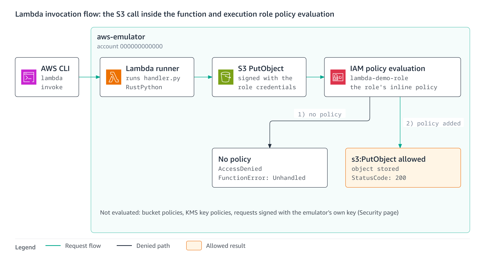
# 1) No policy
"errorMessage": "... User: arn:aws:sts::000000000000:assumed-role/lambda-demo-role/lambda-demo
is not authorized to perform: s3:PutObject ... because no identity-based policy allows the s3:PutObject action"
# 2) After adding the allow policy
{"ok": true}
$ aws s3 cp s3://lambda-demo/from-lambda.txt -
written by lambdaThe whole example finished in 5.08 seconds. You can check a function's service call flow and error handling without a deployment. The function runs on RustPython built into the emulator, not on the real Lambda runtime, so packages that use C extensions may not work. According to the Security page, IAM policies are not evaluated the same way as in AWS either. This result is not evidence that a permission design is safe, so permissions must be verified on real AWS.
A coding agent reruns the tests every time it changes the code. With the emulator, you can let an agent repeatedly run code that calls AWS without giving it credentials for a real account. Keys and state are separate for each run, so agents working at the same time do not touch each other's resources.
The skill also serves to check, before adoption, whether your project will work on the emulator. According to the Checking whether your project works page, you ask the agent something like "Check whether the app in this repository will work on AWS Emulator." The agent finds the AWS operations your project uses, compares them with the fidelity tests and scores, and tells you which parts you can rely on.
04
| Suitable uses | Unsuitable uses |
|---|---|
| Integration tests for apps that use services such as S3, DynamoDB, and SQS | Security verification such as IAM policies, bucket policies, and KMS key policies |
| Error path tests such as a failed conditional write or a lookup of a nonexistent resource | Verification of complex CloudFormation, AWS CDK, and Terraform deployments |
| CI jobs that run without credentials | Performance tests, load tests, and long runs |
| Fast trial and error by coding agents | Data processing that handles more than 1,000 objects per bucket |
| Early verification of Lambda functions and service-to-service call flows | Logic that depends on LLM output |
Table 4. Suitable and unsuitable uses of AWS Emulator, from the hands-on results (as of v1.0.322)
Some of the unsuitable uses are constraints I confirmed in the hands-on tests. When I kept putting objects into one bucket, the 1,001st PutObject was rejected. This limit is not documented. When I created an S3 bucket with Terraform, it failed because the S3 Control request that the provider makes did not reach the emulator. Amazon Bedrock Converse returned a fixed phrase without running a model.
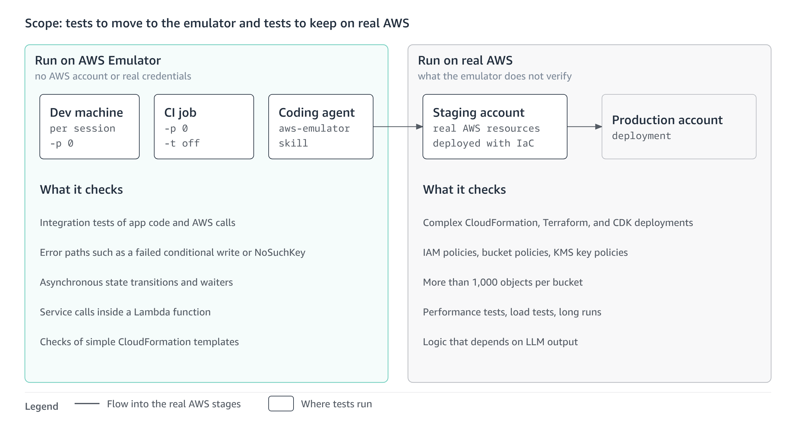
I recommend moving the lower part of the test pyramid, the integration tests of app code and AWS calls, to the emulator and keeping deployment verification and security verification on real AWS staging. When you adopt it, setting the following four items as team rules keeps things safe.
unset line, and keep no real credentials in the test environment.000000000000, requests do not go to a real account when a setting is missing.05
At the start of this post, I asked where you run the integration tests for code that calls the AWS SDK. Within what I verified with AWS Emulator v1.0.322, integration tests for app code that uses S3, DynamoDB, and SQS ran on a development machine and in CI without an account or credentials. Installation took a single package, and I changed only environment variables, not the app code. Of the seven error responses I compared, six matched real AWS.
My assessment is that AWS Emulator fills the test layer that was empty between mocks and a development account. Mocks are fast but return only the responses the developer expected. A development account is accurate but slow, and it brings credential management with it. The emulator returns the errors and state transitions of real services locally in milliseconds, so it lets you check "Does the code that calls AWS behave correctly?" on every commit.
I expect the coverage to widen quickly. AWS generates the services from published API models and publishes the fidelity tests and the per-service scores with every release. Twelve releases came out in the five days from November 7 to 11, 2026. IaC deployment verification, which I classified as unsuitable for now, is something to judge again while watching whether the scores rise. In contrast, areas that the documentation explicitly says not to test, such as IAM policy evaluation, are safer left on real AWS going forward.
I think coding agents are where its use will grow the most. You can have an agent run code that calls AWS all the way through without giving it credentials for a real account. Keys and state are separated for each run, so several agents running at the same time do not touch each other's resources. Having the code an agent wrote pass the emulator tests before a person reviews it is a setup you can apply right away.
I recommend starting adoption in a small scope. First, move to the emulator the CI jobs for fork PRs, where passing credentials was difficult, and the error path tests you were imitating with mocks. Run the same tests periodically on real AWS in a staging account as well. If a test passes on the emulator but fails on real AWS, record which call differed and how. This record becomes your team's standard for how far to trust the emulator. Reporting the differences as GitHub issues, as the Fidelity page suggests, also helps improve the emulator. For the time being, verify permissions, complex IaC deployments, large volumes of data, and logic that depends on LLM output on real AWS. I hope the examples in this post serve as a reference when you review your own test environment.